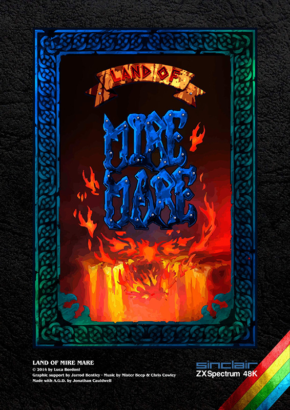
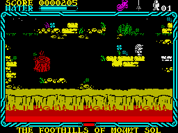

Land of Mire Mare


{kind=link}

| Created by: | Luca Bordoni, Jarrod Bentley, Mister Beep, Chris Cowley |
| Price: | Free |
| Year: | 2014 |
Land of Mire Mare is a tribute game inspired by the unreleased Mire Mare from Ultimate Play The Game. Set in a fantasy world, players embark on Sabreman's last adventure, where they must prevent three volcanoes from erupting by collecting magical jewels.

The game involves navigating through the Land of Mire Mare, where players encounter various enemies, including invulnerable Guardians like a Knight, a Gargoyle, and a Fire Eagle. Sabreman must exchange pledges for jewels to progress, adding a strategic layer to the gameplay.
Players can collect weapons such as a Sword, Axe, and Staff, each with unique abilities to defeat different enemies. The Sword can kill most enemies, the Axe extinguishes fire and opens doors, while the Staff can defeat all but the Jewel Guardians.
Additional items like water glasses restore energy, and keys open doors, but must be used sparingly. The game also features a countdown timer, adding urgency to the mission. Developed by Luca Bordoni, the game includes graphics by Jarrod Bentley and music by Mister Beep.